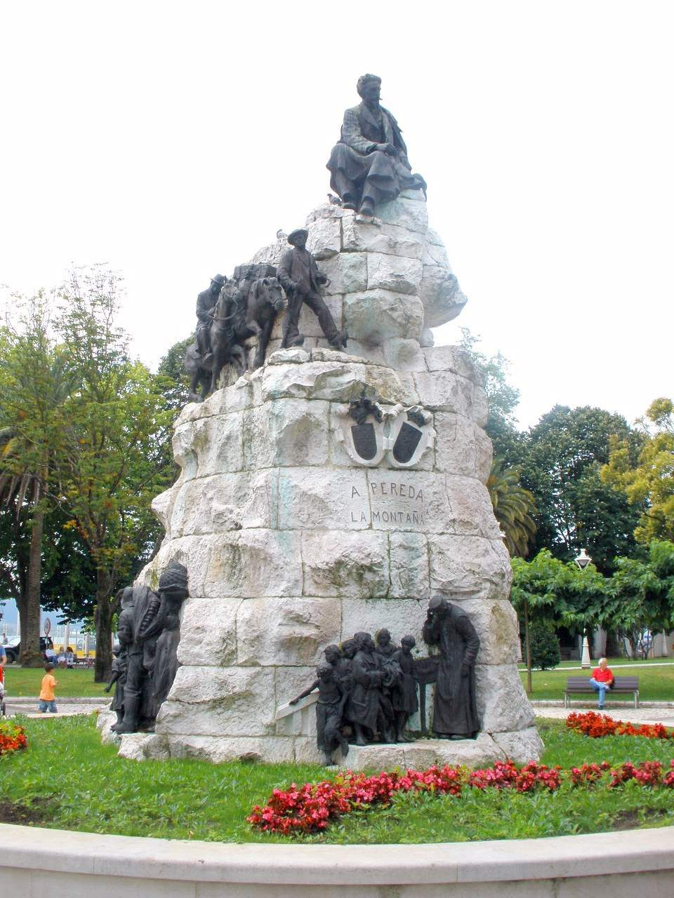
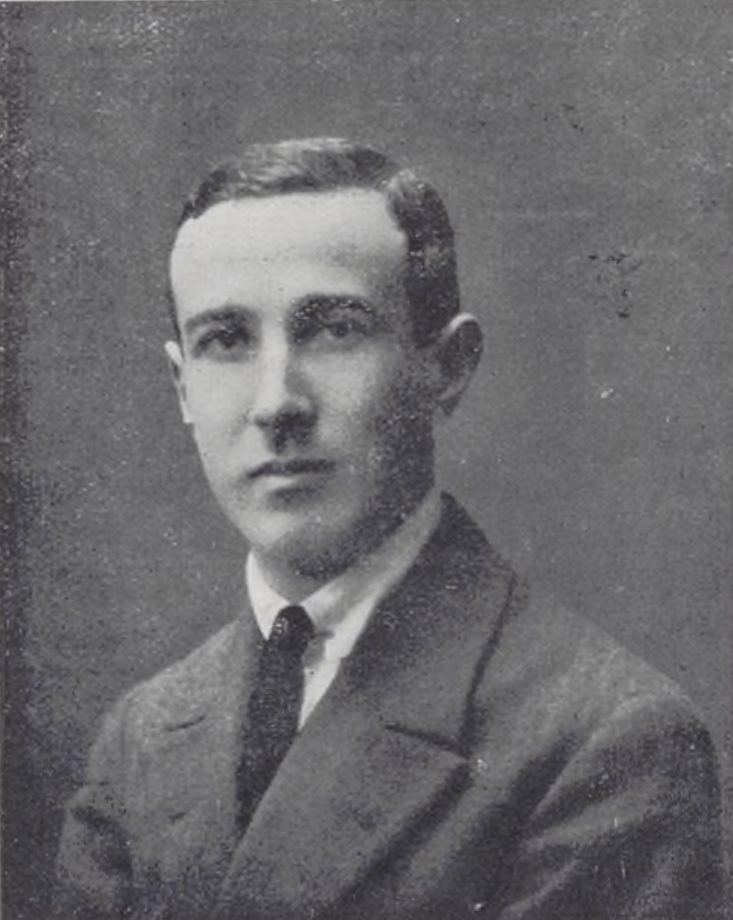

Escritores: Pereda y Gerardo Diego
Criterios: PC 5.2, PC 2.2
🤔 Pienso5 min
Qué hago aquí: Piensa un momento y contesta con lo que ya sabes. No pasa nada si no lo sabes: es para empezar.
Si tuvieras que escribir una historia que pasara en Cantabria, ¿dónde la situarías y quiénes serían los personajes?
📖 Leo y aprendo15 min
Qué hago aquí: Lee despacio, mira los dibujos y los ejemplos, y quédate con la idea clave del final.
Cantabria ha dado escritores muy importantes de la literatura en español. Dos de ellos destacan: un novelista del siglo xix y un poeta del siglo xx.

Foto: Zarateman · CC0 · Santander - Monumento a Pereda.jpg

Foto: Unknown author Unknown author · Public domain · 1927-07, La Vida Literaria, Gerardo Diego (cropped).jpg
sabio e historiador; su biblioteca está en Santander
novelista, propuesta varias veces al Nobel
poeta criado en Santander, Premio Cervantes 1998
✏️ Hago25 min
Qué hago aquí: Haz las actividades en orden. Empieza siempre por las básicas.
Compara a Pereda y a Gerardo Diego en una tabla: siglo, género literario, movimiento, obra principal y relación con Cantabria.
Explica qué es una novela realista y por qué las novelas de Pereda son también un documento histórico sobre la Cantabria del siglo xix.
Sotileza transcurre en el mar y Peñas arriba en la montaña. Relaciona cada novela con una unidad del libro y explica qué patrimonio retrata.
Calcula a qué edad murieron Pereda y Gerardo Diego, y cuántos años pasaron entre Sotileza y el Premio Cervantes de Gerardo Diego.
Busca y lee El ciprés de Silos. Explica con qué compara el poeta el ciprés, qué sentimiento transmite y por qué es un soneto.
Explica por qué la biblioteca de Menéndez Pelayo es patrimonio aunque sea «solo» una colección de libros. ¿Qué tipo de patrimonio es?
Escribe un texto descriptivo de 8–10 líneas al estilo realista sobre un lugar de tu pueblo: paisaje, personas, oficios y forma de hablar.
🚀 Amplío (si quieres saber más)
Qué hago aquí: ¿Has terminado? Lee la curiosidad o elige el reto. Es voluntario.
Investiga la Casona de Tudanca, donde se conserva la memoria de Peñas arriba. Explica qué relación tiene con el personaje de la novela y con José María de Cossío, y por qué una casa puede ser «lugar literario».
✅ Compruebo5 min
Qué hago aquí: Contesta sin mirar la ficha y marca cómo lo llevas.